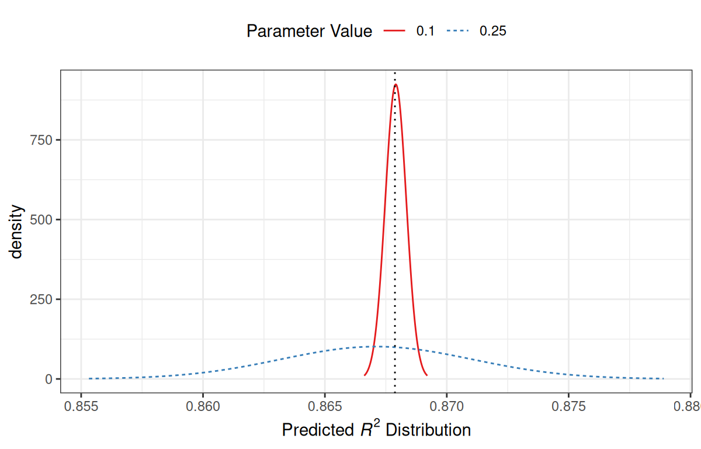
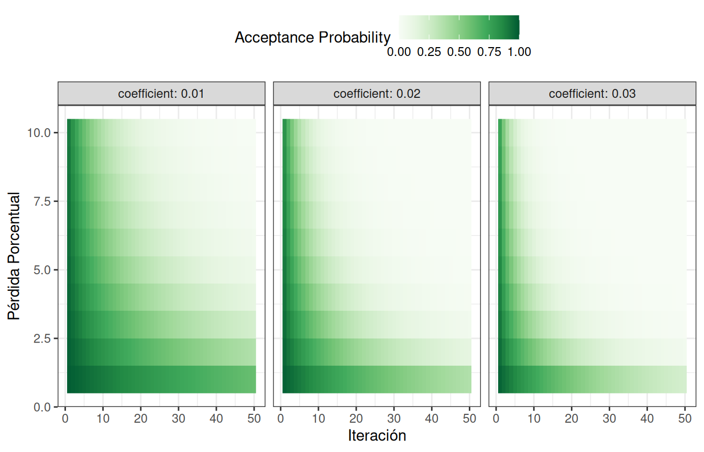
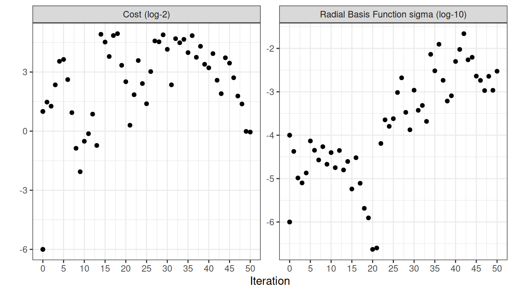

library(tidymodels)
tidymodels_prefer()
svm_rec <-
recipe(class ~ ., data = cells) %>%
step_YeoJohnson(all_numeric_predictors()) %>%
step_normalize(all_numeric_predictors())
svm_spec <-
svm_rbf(cost = tune(), rbf_sigma = tune()) %>%
set_engine("kernlab") %>%
set_mode("classification")
svm_wflow <-
workflow() %>%
add_model(svm_spec) %>%
add_recipe(svm_rec)14 Búsqueda Iterativa
El Capítulo 13 demostró cómo la búsqueda en cuadrícula toma un conjunto predefinido de valores candidatos, los evalúa y luego elige la mejor configuración. Los métodos de búsqueda iterativos siguen una estrategia diferente. Durante el proceso de búsqueda, predicen qué valores probar a continuación.
Cuando la búsqueda en cuadrícula no es factible o ineficiente, los métodos iterativos son un enfoque sensato para optimizar los parámetros de ajuste.
Este capítulo describe dos métodos de búsqueda. Primero, analizamos la optimización bayesiana, que utiliza un modelo estadístico para predecir mejores configuraciones de parámetros. Después de eso, el capítulo describe un método de búsqueda global llamado recocido simulado.
Usamos los mismos datos sobre las características de las células que en el capítulo anterior a modo de ilustración, pero cambiamos el modelo. Este capítulo utiliza un modelo de máquina de vectores de soporte porque proporciona bonitas visualizaciones bidimensionales de los procesos de búsqueda.
14.1 Un Modelo De Máquina De Vectores De Soporte
Una vez más utilizamos los datos de segmentación de celdas, descritos en Sección 13.2, para modelar, con un modelo de máquina de vectores de soporte (SVM) para demostrar métodos de ajuste secuencial. Consulte Kuhn y Johnson (2013) para obtener más información sobre este modelo. Los dos parámetros de ajuste a optimizar son el valor del costo de SVM y el parámetro del núcleo de la función de base radial \(\sigma\). Ambos parámetros pueden tener un efecto profundo en la complejidad y el rendimiento del modelo.
El modelo SVM utiliza un producto escalar y, por este motivo, es necesario centrar y escalar los predictores. Al igual que el modelo de perceptrón multicapa, este modelo se beneficiaría del uso de la extracción de características PCA. Sin embargo, no utilizaremos este tercer parámetro de ajuste en este capítulo para que podamos visualizar el proceso de búsqueda en dos dimensiones.
Junto con los objetos utilizados anteriormente (que se muestran en Sección 13.6), los objetos tidymodels svm_rec, svm_spec y svm_wflow definen el proceso del modelo:
Los rangos de parámetros predeterminados para los dos parámetros de ajuste cost y rbf_sigma son:
cost()
## Cost (quantitative)
## Transformer: log-2 [1e-100, Inf]
## Range (transformed scale): [-10, 5]
rbf_sigma()
## Radial Basis Function sigma (quantitative)
## Transformer: log-10 [1e-100, Inf]
## Range (transformed scale): [-10, 0]A modo de ilustración, cambiemos ligeramente el rango de parámetros del kernel para mejorar las visualizaciones de la búsqueda:
svm_param <-
svm_wflow %>%
extract_parameter_set_dials() %>%
Matrix::update(rbf_sigma = rbf_sigma(c(-7, -1)))Antes de analizar detalles específicos sobre la búsqueda iterativa y cómo funciona, exploremos la relación entre los dos parámetros de ajuste de SVM y el área bajo la curva ROC para este conjunto de datos específico. Construimos una cuadrícula regular muy grande, compuesta por 2500 valores candidatos, y evaluamos la cuadrícula mediante remuestreo. Obviamente, esto es poco práctico en el análisis de datos regular y tremendamente ineficiente. Sin embargo, aclara el camino que debe tomar el proceso de búsqueda y dónde ocurren los valores numéricamente óptimos.
Figura 14.1 muestra los resultados de la evaluación de esta cuadrícula, donde el color más claro corresponde a un mayor (mejor) rendimiento del modelo. Hay una gran franja en la diagonal inferior del espacio de parámetros que es relativamente plana con un rendimiento deficiente. En la parte superior derecha del espacio se produce una cresta de mejor rendimiento. El punto negro indica la mejor configuración. La transición desde la meseta de los malos resultados a la cima del mejor desempeño es muy pronunciada. También hay una fuerte caída en el área bajo la curva ROC justo a la derecha de la cresta.

Los siguientes procedimientos de búsqueda requieren al menos algunas estadísticas de rendimiento remuestreadas antes de continuar. Para ello, el siguiente código crea una pequeña cuadrícula regular que reside en la parte plana del espacio de parámetros. La función tune_grid() vuelve a muestrear esta cuadrícula:
set.seed(1401)
start_grid <-
svm_param %>%
Matrix::update(
cost = cost(c(-6, 1)),
rbf_sigma = rbf_sigma(c(-6, -4))
) %>%
grid_regular(levels = 2)
set.seed(1402)
svm_initial <-
svm_wflow %>%
tune_grid(resamples = cell_folds, grid = start_grid, metrics = roc_res)
collect_metrics(svm_initial)
## # A tibble: 4 × 8
## cost rbf_sigma .metric .estimator mean n std_err .config
## <dbl> <dbl> <chr> <chr> <dbl> <int> <dbl> <chr>
## 1 0.0156 0.000001 roc_auc binary 0.864 10 0.00864 Preprocessor1_Model1
## 2 2 0.000001 roc_auc binary 0.863 10 0.00867 Preprocessor1_Model2
## 3 0.0156 0.0001 roc_auc binary 0.863 10 0.00862 Preprocessor1_Model3
## 4 2 0.0001 roc_auc binary 0.866 10 0.00855 Preprocessor1_Model4Esta cuadrícula inicial muestra resultados bastante equivalentes, sin que ningún punto individual sea mucho mejor que los demás. Estos resultados pueden ser absorbidos por las funciones de ajuste iterativas analizadas en las siguientes secciones para usarse como valores iniciales.
14.2 Optimización Bayesiana
Las técnicas de optimización bayesiana analizan los resultados del remuestreo actual y crean un modelo predictivo para sugerir valores de parámetros de ajuste que aún no se han evaluado. A continuación se vuelve a muestrear la combinación de parámetros sugerida. Estos resultados luego se utilizan en otro modelo predictivo que recomienda más valores candidatos para realizar pruebas, y así sucesivamente. El proceso continúa durante un número determinado de iteraciones o hasta que no se produzcan más mejoras. Shahriari et al. (2016) y Frazier (2018) son buenas introducciones a la optimización bayesiana.
Cuando se utiliza la optimización bayesiana, las principales preocupaciones son cómo crear el modelo y cómo seleccionar los parámetros recomendados por ese modelo. Primero, consideremos la técnica más comúnmente utilizada para la optimización bayesiana, el modelo de proceso gaussiano.
14.2.1 Un modelo de proceso gaussiano
Los modelos de proceso gaussiano (GP) (Schulz, Speekenbrink, y Krause 2018) son técnicas estadísticas bien conocidas que tienen una historia en la estadística espacial (bajo el nombre de métodos de kriging). Se pueden derivar de múltiples formas, incluso como modelo bayesiano; consulte Rasmussen y Williams (2006) para obtener una excelente referencia.
Matemáticamente, un GP es una colección de variables aleatorias cuya distribución de probabilidad conjunta es gaussiana multivariada. En el contexto de nuestra aplicación, esta es la colección de métricas de rendimiento para los valores candidatos de los parámetros de ajuste. Para la cuadrícula inicial anterior de cuatro muestras, la realización de estas cuatro variables aleatorias fue 0.8639, 0.8625, 0.8627, and 0.8659. Se supone que están distribuidos como gaussianos multivariados. Las entradas que definen las variables/predictores independientes para el modelo GP son los valores de los parámetros de ajuste correspondientes (que se muestran en Tabla 14.1).
| ROC | cost | rbf_sigma |
|---|---|---|
| 0.8639 | 0.01562 | 0.000001 |
| 0.8625 | 2.00000 | 0.000001 |
| 0.8627 | 0.01562 | 0.000100 |
| 0.8659 | 2.00000 | 0.000100 |
Los modelos de procesos gaussianos se especifican por sus funciones de media y covarianza, aunque esta última tiene el mayor efecto sobre la naturaleza del modelo GP. La función de covarianza a menudo se parametriza en términos de los valores de entrada (denotados como \(x\)). Como ejemplo, una función de covarianza comúnmente utilizada es la función exponencial al cuadrado1:
\[\operatorname{cov}(\boldsymbol{x}_i, \boldsymbol{x}_j) = \exp\left(-\frac{1}{2}|\boldsymbol{x}_i - \boldsymbol{x}_j|^2\right) + \sigma^2_{ij}\]
donde \(\sigma^2_{ij}\) es un término de varianza de error constante que es cero cuando \(i=j\). Esta ecuación se traduce en:
A medida que aumenta la distancia entre dos combinaciones de parámetros de ajuste, la covarianza entre las métricas de rendimiento aumenta exponencialmente.
La naturaleza de la ecuación también implica que la variación de la métrica del resultado se minimiza en los puntos que ya se han observado (es decir, cuando \(|\boldsymbol{x}_i - \boldsymbol{x}_j|^2\) es cero) .
La naturaleza de esta función de covarianza permite que el proceso gaussiano represente relaciones altamente no lineales entre el rendimiento del modelo y los parámetros de ajuste incluso cuando sólo existe una pequeña cantidad de datos.
Sin embargo, ajustar estos modelos puede resultar difícil en algunos casos y el modelo se vuelve más costoso computacionalmente a medida que aumenta el número de combinaciones de parámetros de ajuste.
Una virtud importante de este modelo es que, dado que se especifica un modelo de probabilidad total, las predicciones de nuevos insumos pueden reflejar la distribución completa del resultado. En otras palabras, se pueden predecir nuevas estadísticas de desempeño tanto en términos de media como de varianza.
Supongamos que se estuvieran considerando dos nuevos parámetros de ajuste. En Tabla 14.2, el candidato A tiene un valor ROC medio ligeramente mejor que el candidato B (el mejor actual es 0.8659). Sin embargo, su varianza es cuatro veces mayor que B. ¿Esto es bueno o malo? Elegir la opción A es más riesgoso pero tiene un rendimiento potencialmente mayor. El aumento en la varianza también refleja que este nuevo valor está más alejado de los datos existentes que B. La siguiente sección considera con más detalle estos aspectos de las predicciones de GP para la optimización bayesiana.
| candidate | mean | variance |
|---|---|---|
| A | 0.90 | 0.000400 |
| B | 0.89 | 0.000025 |
La optimización bayesiana es un proceso iterativo.
Con base en la cuadrícula inicial de cuatro resultados, se ajusta el modelo GP, se predicen los candidatos y se selecciona una quinta combinación de parámetros de ajuste. Calculamos estimaciones de rendimiento para la nueva configuración, el GP se reajusta con los cinco resultados existentes (y así sucesivamente).
14.2.2 Funciones de adquisición
Una vez que el proceso gaussiano se ajusta a los datos actuales, ¿cómo se utiliza? Nuestro objetivo es elegir la siguiente combinación de parámetros de ajuste que tenga más probabilidades de tener “mejores resultados” que los mejores actuales. Un enfoque para hacer esto es crear un gran conjunto de candidatos (quizás usando un diseño que llene el espacio) y luego hacer predicciones de media y varianza para cada uno. Utilizando esta información, elegimos el valor del parámetro de ajuste más ventajoso.
Una clase de funciones objetivo, llamadas funciones de adquisición, facilitan el equilibrio entre media y varianza. Recuerde que la varianza prevista de los modelos GP depende principalmente de qué tan lejos están de los datos existentes. El equilibrio entre la media y la varianza previstas para nuevos candidatos se ve frecuentemente a través del lente de la exploración y la explotación:
La Exploración sesga la selección hacia regiones donde hay menos (si es que hay alguno) modelos candidatos observados. Esto tiende a dar más peso a los candidatos con mayor variación y se centra en encontrar nuevos resultados.
La explotación se basa principalmente en la predicción media para encontrar el mejor valor (medio). Se centra en los resultados existentes.
Para demostrarlo, veamos un ejemplo de juguete con un único parámetro que tiene valores entre [0, 1] y la métrica de rendimiento es \(R^2\). La función verdadera se muestra en Figura 14.2, junto con los valores candidatos five que tienen resultados existentes como puntos.
Para estos datos, el ajuste del modelo GP se muestra en Figura 14.3. La región sombreada indica el error estándar medio \(\pm\) 1. Las dos líneas verticales indican dos puntos candidatos que se examinan con más detalle más adelante.
La región de confianza sombreada demuestra la función de varianza exponencial al cuadrado; se vuelve muy grande entre puntos y converge a cero en los puntos de datos existentes.
Esta tendencia no lineal pasa por cada punto observado, pero el modelo no es perfecto. No se observan puntos cercanos al verdadero ajuste óptimo y, en esta región, el ajuste podría ser mucho mejor. A pesar de esto, el modelo GP puede orientarnos efectivamente en la dirección correcta.
Desde un punto de vista puramente de explotación, la mejor opción sería seleccionar el valor del parámetro que tenga la mejor predicción media. Aquí, esto sería un valor de 0.106, justo a la derecha del punto mejor observado existente en 0,09.
Como forma de fomentar la exploración, un enfoque simple (pero no utilizado con frecuencia) es encontrar el parámetro de ajuste asociado con el intervalo de confianza más grande. Por ejemplo, al usar una única desviación estándar para el límite de confianza \(R^2\), el siguiente punto a muestrear sería 0.236. Esto es un poco más en la región sin resultados observados. Aumentar el número de desviaciones estándar utilizadas en el límite superior empujaría la selección hacia regiones vacías.
Una de las funciones de adquisición más utilizadas es mejora esperada. La noción de mejora requiere un valor para los mejores resultados actuales (a diferencia del enfoque de confianza). Dado que el médico de cabecera puede describir un nuevo punto candidato utilizando una distribución, podemos ponderar las partes de la distribución que muestran una mejora utilizando la probabilidad de que se produzca la mejora.
Por ejemplo, considere dos valores de parámetros candidatos de 0,10 y 0,25 (indicados por las líneas verticales en Figura 14.3). Utilizando el modelo GP ajustado, sus distribuciones \(R^2\) previstas se muestran en Figura 14.4 junto con una línea de referencia para los mejores resultados actuales.

Cuando solo se considera la predicción media de \(R^2\), un valor de parámetro de 0,10 es la mejor opción (consulte Tabla 14.3). Se prevé, en promedio, que la recomendación del parámetro de ajuste de 0,25 será peor que el mejor nivel actual. Sin embargo, dado que tiene una mayor varianza, tiene más área de probabilidad general por encima del mejor nivel actual. Como resultado, tiene una mejora esperada mayor:
| Parameter Value | Mean | Std Dev | Expected Improvment |
|---|---|---|---|
| 0.10 | 0.8679 | 0.0004317 | 0.000190 |
| 0.25 | 0.8671 | 0.0039301 | 0.001216 |
Cuando la mejora esperada se calcula en todo el rango del parámetro de ajuste, el punto de muestreo recomendado está mucho más cerca de 0,25 que de 0,10, como se muestra en Figura 14.5.
Se han propuesto y discutido numerosas funciones de adquisición; en tidymodels, la mejora esperada es la predeterminada.
14.2.3 La función tune_bayes()
Para implementar la búsqueda iterativa mediante optimización bayesiana, utilice la función tune_bayes(). Su sintaxis es muy similar a tune_grid() pero con varios argumentos adicionales:
iteres el número máximo de iteraciones de búsqueda.initialPuede ser un número entero, un objeto producido usandotune_grid()o una de las funciones de carrera. El uso de un número entero especifica el tamaño de un diseño de relleno de espacio que se muestrea antes del primer modelo GP.objectivees un argumento para qué función de adquisición se debe utilizar. El paquete tune contiene funciones para pasar aquí, comoexp_improve()oconf_bound().El argumento
param_info, en este caso, especifica el rango de los parámetros así como cualquier transformación que se utilice. Se utilizan para definir el espacio de búsqueda. En situaciones en las que los objetos de parámetros predeterminados son insuficientes, se utilizaparam_infopara anular los valores predeterminados.
El argumento control ahora usa los resultados de control_bayes(). Algunos argumentos útiles son:
no_improvees un número entero que detendrá la búsqueda si no se descubren parámetros mejorados dentro de las iteracionesno_improve.uncertaintambién es un número entero (oInf) que tomará una muestra de incertidumbre si no hay mejora dentro de las iteracionesinciertas. Esto seleccionará al siguiente candidato que tenga una gran variación. Tiene el efecto de exploración pura ya que no considera la predicción media.verbosees un método lógico que imprimirá información de registro a medida que avanza la búsqueda.
Usemos los primeros resultados de SVM de Sección 14.1 como sustrato inicial para el modelo de proceso gaussiano. Recuerde que, para esta aplicación, queremos maximizar el área bajo la curva ROC. Nuestro código es:
ctrl <- control_bayes(verbose = TRUE)
set.seed(1403)
svm_bo <-
svm_wflow %>%
tune_bayes(
resamples = cell_folds,
metrics = roc_res,
initial = svm_initial,
param_info = svm_param,
iter = 25,
control = ctrl
)El proceso de búsqueda comienza con un mejor valor inicial de 0.8659 para el área bajo la curva ROC. Un modelo de proceso gaussiano utiliza estas estadísticas four para crear un modelo. El gran conjunto de candidatos se genera y califica automáticamente utilizando la función de adquisición de mejora esperada. La primera iteración no logró mejorar el resultado con un valor ROC de 0.86315. Después de ajustar otro modelo de proceso gaussiano con el nuevo valor de resultado, la segunda iteración tampoco logró producir una mejora.
El registro de las dos primeras iteraciones, generado por la opción “detallado”, fue:
La búsqueda continúa. Hubo un total de 9 mejoras en el resultado a lo largo del camino en las iteraciones 3, 4, 5, 6, 8, 13, 22, 23, and 24. El mejor resultado se produjo en la iteración 24 con un área bajo la curva ROC de 0.8986.
El último paso fue:
Las funciones que se utilizan para interrogar los resultados son las mismas que se utilizan para la búsqueda en cuadrícula (por ejemplo, collect_metrics(), etc.). Por ejemplo:
show_best(svm_bo)
## Warning in show_best(svm_bo): No value of `metric` was given; "roc_auc" will be
## used.
## # A tibble: 5 × 9
## cost rbf_sigma .metric .estimator mean n std_err .config .iter
## <dbl> <dbl> <chr> <chr> <dbl> <int> <dbl> <chr> <int>
## 1 31.8 0.00160 roc_auc binary 0.899 10 0.00785 Iter24 24
## 2 30.8 0.00191 roc_auc binary 0.899 10 0.00791 Iter23 23
## 3 31.4 0.00166 roc_auc binary 0.899 10 0.00784 Iter22 22
## 4 31.8 0.00153 roc_auc binary 0.899 10 0.00783 Iter13 13
## 5 30.8 0.00163 roc_auc binary 0.899 10 0.00782 Iter15 15La función autoplot() tiene varias opciones para métodos de búsqueda iterativos. Figura 14.6 muestra cómo cambió el resultado durante la búsqueda usando autoplot(svm_bo, type = "performance").
autoplot() con type = "performance"
Un tipo adicional de gráfico utiliza type = "parameters" que muestra los valores de los parámetros en iteraciones.
La siguiente animación visualiza los resultados de la búsqueda. Los valores negros \(\times\) muestran los valores iniciales contenidos en svm_initial. El panel azul superior izquierdo muestra el valor medio previsto del área bajo la curva ROC. El panel rojo en la parte superior derecha muestra la variación prevista en los valores de ROC, mientras que el gráfico inferior visualiza la mejora esperada. En cada panel, los colores más oscuros indican valores menos atractivos (por ejemplo, valores medios pequeños, variación grande y mejoras pequeñas).
La superficie de la superficie media prevista es muy inexacta en las primeras iteraciones de la búsqueda. A pesar de esto, ayuda a guiar el proceso hacia la región de buen desempeño. En otras palabras, el modelo del proceso gaussiano es incorrecto pero resulta muy útil. Dentro de las primeras diez iteraciones, la búsqueda realiza un muestreo cerca de la ubicación óptima.
Si bien la mejor combinación de parámetros de ajuste se encuentra en el límite del espacio de parámetros, la optimización bayesiana a menudo elegirá nuevos puntos en otros lados del límite. Si bien podemos ajustar la proporción de exploración y explotación, la búsqueda tiende a muestrear puntos fronterizos desde el principio.
Si la búsqueda se basa en una cuadrícula inicial, un diseño que llene el espacio probablemente sería una mejor opción que un diseño normal. Muestra valores más únicos del espacio de parámetros y mejoraría las predicciones de la desviación estándar en las primeras iteraciones.
Finalmente, si el usuario interrumpe los cálculos de tune_bayes(), la función devuelve los resultados actuales (en lugar de generar un error).
14.3 Recocido Simulado
Recocido simulado (SA) (Kirkpatrick, Gelatt, y Vecchi 1983; Van Laarhoven y Aarts 1987) es una rutina de búsqueda no lineal general inspirada en el proceso en el que se enfría el metal. Es un método de búsqueda global que puede navegar eficazmente por muchos tipos diferentes de entornos de búsqueda, incluidas funciones discontinuas. A diferencia de la mayoría de las rutinas de optimización basadas en gradientes, el recocido simulado puede reevaluar soluciones anteriores.
14.3.1 Proceso de búsqueda de recocido simulado
El proceso de uso del recocido simulado comienza con un valor inicial y se embarca en un recorrido aleatorio controlado a través del espacio de parámetros. Cada nuevo valor de parámetro candidato es una pequeña perturbación del valor anterior que mantiene el nuevo punto dentro de una vecindad local.
El punto candidato se vuelve a muestrear para obtener su valor de rendimiento correspondiente. Si con este se logran mejores resultados que los parámetros anteriores, se acepta como el nuevo mejor y el proceso continúa. Si los resultados son peores que el valor anterior, el procedimiento de búsqueda aún puede usar este parámetro para definir pasos adicionales. Esto depende de dos factores. Primero, la probabilidad de aceptar un mal resultado disminuye a medida que el desempeño empeora. En otras palabras, un resultado ligeramente peor tiene más posibilidades de aceptación que uno con una gran caída en el rendimiento. El otro factor es el número de iteraciones de búsqueda. El recocido simulado quiere aceptar menos valores subóptimos a medida que avanza la búsqueda. A partir de estos dos factores, la probabilidad de aceptación de un mal resultado puede formalizarse como:
\[\operatorname{Pr}[\text{accept suboptimal parameters at iteration } i] = \exp(c\times D_i \times i)\]
donde \(i\) es el número de iteración, \(c\) es una constante especificada por el usuario y \(D_i\) es la diferencia porcentual entre los valores antiguos y nuevos (donde los valores negativos implican peores resultados). Para un mal resultado, determinamos la probabilidad de aceptación y la comparamos con un número uniforme aleatorio. Si el número aleatorio es mayor que el valor de probabilidad, la búsqueda descarta los parámetros actuales y la siguiente iteración crea su valor candidato en la vecindad del valor anterior. De lo contrario, la siguiente iteración forma el siguiente conjunto de parámetros en función de los valores actuales (subóptimos).
Las probabilidades de aceptación del recocido simulado permiten que la búsqueda avance en la dirección equivocada, al menos a corto plazo, con el potencial de encontrar una región mucho mejor del espacio de parámetros a largo plazo.
¿Cómo se ven influenciadas las probabilidades de aceptación? El mapa de calor en Figura 14.7 muestra cómo la probabilidad de aceptación puede cambiar a lo largo de las iteraciones, el rendimiento y el coeficiente especificado por el usuario.

El usuario puede ajustar los coeficientes para encontrar un perfil de probabilidad que se adapte a sus necesidades. En finetune::control_sim_anneal(), el valor predeterminado para este argumento cooling_coef es 0.02. Disminuir este coeficiente fomentará que la búsqueda sea más indulgente con los malos resultados.
Este proceso continúa durante una cantidad determinada de iteraciones, pero puede detenerse si no se obtienen los mejores resultados globales dentro de un número predeterminado de iteraciones. Sin embargo, puede resultar muy útil establecer un umbral de reinicio. Si hay una serie de fallas, esta función revisa la última configuración de parámetros globalmente mejor y comienza de nuevo.
El principal detalle importante es definir cómo perturbar los parámetros de ajuste de una iteración a otra. Hay una variedad de métodos en la literatura para esto. Seguimos el método dado en Bohachevsky, Johnson, y Stein (1986) llamado recocido simulado generalizado. Para parámetros de ajuste continuo, definimos un radio pequeño para especificar el “vecindario” local. Por ejemplo, supongamos que hay dos parámetros de ajuste y cada uno está limitado por cero y uno. El proceso de recocido simulado genera valores aleatorios en el radio circundante y elige aleatoriamente uno como valor candidato actual.
En nuestra implementación, la vecindad se determina escalando el candidato actual para que esté entre cero y uno según el rango del objeto de parámetro, por lo que los valores de radio entre 0,05 y 0,15 parecen razonables. Para estos valores, lo más rápido que puede ir la búsqueda de un lado al otro del espacio de parámetros es de aproximadamente 10 iteraciones. El tamaño del radio controla la rapidez con la que la búsqueda explora el espacio de parámetros. En nuestra implementación, se especifica un rango de radios para que diferentes magnitudes de “local” definan los nuevos valores candidatos.
Para ilustrar, usaremos los dos parámetros de ajuste principales glmnet:
El importe de la regularización total (
penalty). El rango predeterminado para este parámetro es \(10^{-10}\) a \(10^{0}\). Es típico utilizar una transformación logarítmica (base-10) para este parámetro.La proporción de la pena de lazo (
mixture). Esto está acotado en cero y uno sin transformación.
El proceso comienza con valores iniciales de penalty = 0,025 y mixture = 0,050. Utilizando un radio que fluctúa aleatoriamente entre 0,050 y 0,015, los datos se escalan adecuadamente, se generan valores aleatorios en los radios alrededor del punto inicial y luego se elige uno al azar como candidato. A modo de ilustración, asumiremos que todos los valores candidatos son mejoras. Utilizando el nuevo valor, se genera un conjunto de nuevos vecinos aleatorios, se elige uno, y así sucesivamente. Figura 14.8 muestra six iteraciones a medida que la búsqueda avanza hacia la esquina superior izquierda.

Tenga en cuenta que, durante algunas iteraciones, los conjuntos candidatos a lo largo del radio excluyen puntos fuera de los límites del parámetro. Además, nuestra implementación desvía la elección de las siguientes configuraciones de parámetros de ajuste lejos de nuevos valores que son muy similares a las configuraciones anteriores.
Para parámetros no numéricos, asignamos una probabilidad de con qué frecuencia cambia el valor del parámetro.
14.3.2 La función tune_sim_anneal()
Para implementar la búsqueda iterativa mediante recocido simulado, utilice la función tune_sim_anneal(). La sintaxis de esta función es casi idéntica a tune_bayes(). No hay opciones para funciones de adquisición o muestreo de incertidumbre. La función control_sim_anneal() tiene algunos detalles que definen la vecindad local y el programa de enfriamiento:
no_improve, para recocido simulado, es un número entero que detendrá la búsqueda si no se descubren resultados globales mejores o mejorados dentro de las iteracionesno_improve. Los parámetros subóptimos aceptados o descartados cuentan como “sin mejora”.restartes el número de iteraciones sin nuevos mejores resultados antes de comenzar con los mejores resultados anteriores.radiuses un vector numérico en (0, 1) que define el radio mínimo y máximo de la vecindad local alrededor del punto inicial.flipes un valor de probabilidad que define las posibilidades de alterar el valor de parámetros categóricos o enteros.cooling_coefes el coeficiente \(c\) en \(\exp(c\times D_i \times i)\) que modula la rapidez con la que la probabilidad de aceptación disminuye a lo largo de las iteraciones. Los valores más grandes decooling_coefdisminuyen la probabilidad de aceptar una configuración de parámetro subóptima.
Para los datos de segmentación de celdas, la sintaxis es muy consistente con las funciones utilizadas anteriormente:
ctrl_sa <- control_sim_anneal(verbose = TRUE, no_improve = 10L)
set.seed(1404)
svm_sa <-
svm_wflow %>%
tune_sim_anneal(
resamples = cell_folds,
metrics = roc_res,
initial = svm_initial,
param_info = svm_param,
iter = 50,
control = ctrl_sa
)El proceso de recocido simulado descubrió nuevos óptimos globales en 0 diferentes iteraciones. Había 4 se reinicia en iteraciones 13, 21, 35, and 43.
La opción verbose imprime detalles del proceso de búsqueda. El resultado de las primeras cinco iteraciones fue:
El resultado de las últimas diez iteraciones fue:
## 40 ◯ accept suboptimal roc_auc=0.89606 (+/-0.008203)
##
## 41 ─ discard suboptimal roc_auc=0.87556 (+/-0.009272)
##
## 42 ─ discard suboptimal roc_auc=0.87198 (+/-0.009301)
##
## 43 ✖ restart from best roc_auc=0.89801 (+/-0.008224)
##
## 44 ◯ accept suboptimal roc_auc=0.89006 (+/-0.008789)
##
## 45 + better suboptimal roc_auc=0.89781 (+/-0.008104)
##
## 46 ◯ accept suboptimal roc_auc=0.89563 (+/-0.008601)
##
## 47 ─ discard suboptimal roc_auc=0.88527 (+/-0.008766)
##
## 48 ◯ accept suboptimal roc_auc=0.8922 (+/-0.008891)
##
## 49 ─ discard suboptimal roc_auc=0.87691 (+/-0.008352)
##
## 50 ◯ accept suboptimal roc_auc=0.88803 (+/-0.008728)Al igual que con las otras funciones tune_*(), la función autoplot() correspondiente produce evaluaciones visuales de los resultados. El uso de autoplot(svm_sa, type = "performance") muestra el rendimiento en iteraciones (Figura 14.9) mientras que autoplot(svm_sa, type = "parameters") traza el rendimiento versus valores de parámetros de ajuste específicos (Figura 14.10).
autoplot() con type = "performance"

autoplot() se usa con type = "parameters".
Una visualización de la ruta de búsqueda ayuda a comprender dónde funcionó bien el proceso de búsqueda y dónde se extravió:
Al igual que tune_bayes(), detener manualmente la ejecución devolverá las iteraciones completadas.
14.4 Resumen Del Capítulo
Este capítulo describió dos métodos de búsqueda iterativos para optimizar los parámetros de ajuste. La optimización de Bayes utiliza un modelo predictivo entrenado en los resultados de remuestreo existentes para sugerir valores de parámetros de ajuste, mientras que el recocido simulado recorre el espacio de hiperparámetros para encontrar buenos valores. Ambos pueden ser eficaces para encontrar buenos valores por sí solos o como método de seguimiento utilizado después de una búsqueda inicial en la cuadrícula para mejorar el rendimiento de finetune.
Esta ecuación también es la misma que la función de base radial utilizada en los métodos del núcleo, como el modelo SVM que se utiliza actualmente. Esto es una coincidencia; esta función de covarianza no está relacionada con el parámetro de ajuste SVM que estamos usando.↩︎